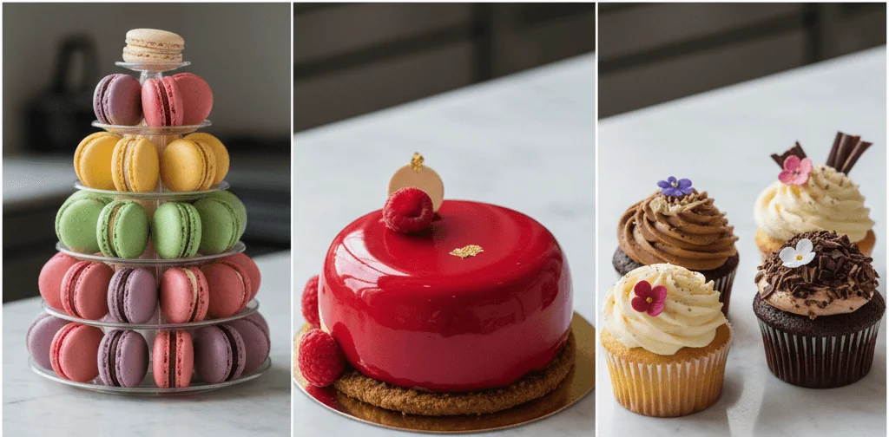
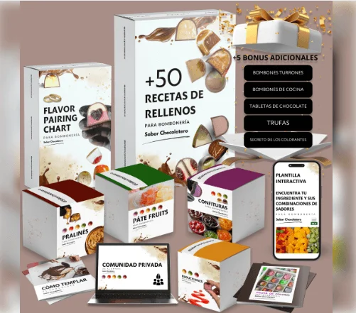

El Ecosistema PRO: Técnica, Herramienta y Estrategia para tu Éxito Repostero
El mercado de la repostería de lujo solo acepta la excelencia. Nuestro enfoque se basa en tres pilares irrenunciables que garantizan la uniformidad, la eficiencia y el alto valor de venta de tus postres. Te proporcionamos las herramientas de análisis de mercado y las guías técnicas para tomar las decisiones correctas, para que cada creación sea una obra de arte y un éxito comercial.

🎓Los Mejores Cursos de Pastelería Profesional: Eleva tu Arte al Siguiente Nivel
Descubre las formaciones que te convertirán en un maestro repostero, capaz de crear postres que no solo deleitan el paladar, sino que también impresionan visualmente.
Diseñador de Pasteles 🎂

Domina el Diseño 3D, Tortas Talladas y el Modelado en Fondant, apto para principiantes.
Más InformaciónBocetos Digitales de Pasteles y Cake Toppers

Aprende diseño de bocetos digitales (Canva/Silhouette) y fabricación de Cake Toppers.
Más InformaciónRepostería Vegana Online

Elaboración de postres, tartas y dulces sin productos de origen animal, y distintas masas saladas.
Más InformaciónDominio del Chocolate Moderno
Aprende técnicas de atemperado, bombones artísticos y esculturas de chocolate.
Más informaciónPastelería Canina y Felina
Idea innovadora
Crea snacks y postres saludables (muffins, pizzas, helados) para perros y gatos.
Más InformaciónPetlicias Navideñas Recetas para Mascotas
Idea innovadora
Elaboración de snacks y postres festivos y saludables con temática navideña para mascotas.
Más InformaciónExplora la variedad de nuestros cursos y encuentra el que mejor se adapte a tus ambiciones. ¡Tu futuro dulce te espera!
🚀 Descubre Todos los Cursos Profesionales📊 Comparativa de Cursos de Pastelería: Elige el Mejor para Ti
Sabemos que cada repostero tiene necesidades únicas. Hemos analizado los mejores cursos disponibles para ayudarte a tomar la decisión más inteligente.

| Curso | Enfoque Principal | Nivel | Duración Estimada | Características Destacadas | Acceso |
|---|---|---|---|---|---|
| Diseñador de Pasteles | Diseño 3D, Tortas Talladas, Modelado en Fondant y 15 Módulos de Técnicas Clásicas | Apto desde Principiantes (Cubre técnicas avanzadas) | Ilimitada (Acceso de por vida al contenido en video HD) | Acceso de por vida, Certificado avalado y +8 Bonos de Recetas Exclusivas | Más Información |
| Bocetos Digitales de Pasteles y Cake Toppers | Diseño de bocetos digitales (Canva/Silhouette), fabricación de Cake Toppers (a mano o con máquina) y técnicas de diseño visual | Principiante (Diseñado para empezar desde cero) | Ilimitada (Acceso de por vida a más de 50 clases) | Más de 300 plantillas descargables, acceso a comunidad privada, actualizaciones GRATIS, certificado de finalización y 6 bonos especiales | Más Información |
| Repostería Vegana Online | Elaboración de postres, tartas y dulces sin productos de origen animal, incluyendo distintas masas saladas | Principiante (Pensado para aprender desde cero) | Ilimitada (Acceso de por vida a las clases) | Clases en video tutorial de 2 a 10 min, recetario en PDF descargable con fichas técnicas, certificado online y garantía de 7 días | Más Información |
| 50 Recetas de Rellenos para Bombonería | Recetario digital con 50 rellenos variados para bombones y trufas (ganaches, pralinés, caramelos). | Intermedio (Requiere conocimientos básicos de chocolatería) | Acceso de por vida | Recetario en PDF descargable, perfecto para ampliar tu portafolio de sabores. | Ver Recetario |
| Pastelería Canina y Felina | Elaboración de snacks, muffins, tamales, pizzas e helados saludables para perros y gatos, utilizando ingredientes caseros. Foco en nutrición y lectura de rótulos de alimentos procesados. | Para todos los amantes de animales | Acceso ilimitado | Negocio innovador con Recetas testadas por veterinario especialista en nutrición, garantía de 7 días, ayuda a emprender vendiendo las delicias. | Más Información |
| Petlicias Navideñas (Recetas para Mascotas) | Elaboración de snacks y postres festivos y saludables con temática navideña para perros y gatos. Enfoque en ingredientes de temporada aptos para mascotas. | Básico-Intermedio | Acceso de por vida | Recetario completo de postres navideños, tips de empaque para regalos/venta y garantía de 7 días. | Más Información |
Cada enlace te llevará a una descripción detallada para que puedas evaluar si es el curso ideal para ti. ¡Invierte en tu talento!
📚 Guías Esenciales: El Conocimiento que Impulsa tu Negocio
Selecciona el tema que cambiará la forma en que trabajas y vendes:
Batidoras PRO: KitchenAid vs. Kenwood vs. Smeg SMF03
Análisis exhaustivo para tu inversión más crucial. Produce grandes volúmenes sin fallos.

Accesorios Clave para tu KitchenAid
Convierte tu batidora en una central de pasta y masas especializadas.
Montar tu Negocio Rentable Desde Casa
La guía de 5 fases para estructurar costos, precios y la logística perfecta.

Impresoras Comestibles: Lujo y Diseño 3D
Transforma pasteles con diseños fotográficos. La inversión de alto margen.

Pasteles de Boda de Lujo: Estrategia de Precios
Aprende a cobrar miles de euros por pieza y atrae clientes exclusivos.

Marketing PRO: Vender con Instagram y TikTok
Domina la fotografía de producto y la creación de Reels virales.

Técnicas Avanzadas de Decoración con Fondant 3D
Escultura comestible, estructuras internas y cómo evitar colapsos.

Kit de Moldes de Silicona para Pastelería Moderna
Logra el desmolde perfecto de entremets y monoporciones.
Petlicias Navideñas: Recetas Festivas y Saludables para Mascotas 🐶🎄
Crea snacks y postres festivos y saludables con temática navideña para perros y gatos. ¡Recetario completo!
Curso de Repostería Vegana Online: El Arte de Sustituir
Domina la aquafaba y el agar-agar para postres sin origen animal.
Curso de Diseñador de Pasteles
Conviertete en Repostero como siempre habías soñado

Master el ABC de Buttercream: Cremas Perfectas y Decoración
Aprende desde cero a preparar y usar los 5 tipos de buttercream más estables y deliciosos para decorar.
Para más artículos sobre pastelería sigue el siguiente enlace
⭐ Ver Contenido completo del blog✨ Deja de Ser un Aficionado. Conviértete en un Experto Certificado.
La diferencia entre un pastel casero y un diseño de €500 es el conocimiento. Nuestros programas te dan el atajo a la rentabilidad y el prestigio. Invierte en tu talento y cosecha el éxito.
✅ Iniciar Mi Formación ProfesionalGarantía de acceso de por vida a las actualizaciones del programa.